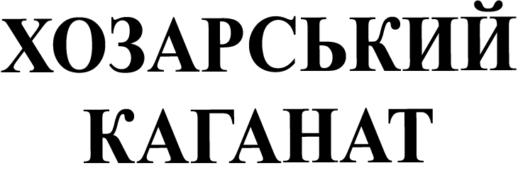

Розселення східних слов’ян та їх сусідів доби утворення Київської Русі (VIII–X ст.)
"Руська Земля" - ядро давньоруської держави Київської Русі
Київська Русь
Умовні межі Київської Русі
Княжіння - ранньодержавні об'єднання східних слов'ян
Сусіди східних слов'ян

Ранньофеодальна держава
Переселення угрів у IX ст.